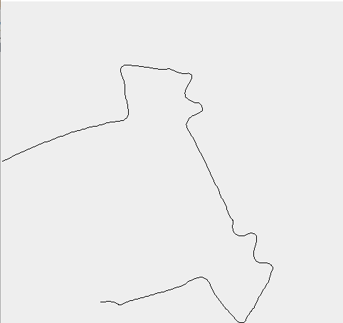

The main idea of the algorithm is to move the robot such that it follows the wall, and keep track of the way the robot moves. By drawing a map of the robot's motion, we draw a map of the wall. Because the tracking of the robot's motion is imperfect, we use the additional prior assumption that the map should consist only of line segments with 90° turns to post-process the data and generate an accurate map. This approach can be used to map any area consisting of straight lines and 90° turns, which comprises much of man-made architecture. We include a visualization that shows both the raw and post-processed maps as they are being generated while the robot is running.
For this project we used the wall-following algorithm that we created for project 3. A detailed explanation of the algorithm is available at that website.
We represented a path of the robot as a sequence of points, where each point contains the X and Y position of the robot, the robot's orientation, and the cumulative distance traveled. When the program starts, the path contains a single point, centered at the origin, with 0 rotation and 0 cumulative distance. At a high level, the main logic of our algorithm is a loop reading the relevant sensors from the robot, deciding the correct movements, issuing those commands, and waiting for more sensor data. There are two types of movements that our algorithm uses: moving along a circular arc (used for wall-following) and moving in a straight line followed by a turn. (used when the robot bumps into a counterclockwise turn) The mathematics for how both of these movements affect the robot's position and orientation were calculated. The straight line followed by a turn is fairly trivial. The movement along a circular arc is less so, but its effect is obvious enough that it merits no discussion. Every time a command was issued to the robot, followed by a sensor reading, the values for how far the robot moved and by how much it rotated, as well as the previous path point of the robot, were plugged into our models of the motions and used to determine the new path point of the robot, which was then added to the stored path.
Using the assumption that the area we are mapping consists only of line segments and 90° turns, we can do a lot to clean up our raw path. The approach we took was to detect turning points in our raw path and mark both the cumulative distance they occurred at and the direction of the turn. That data is sufficient to draw out the post-processed map. We detected turning points using a parameterized sliding window. If it was detected that a turn of magnitude greater than a particular threshold occurred within a distance window smaller than another threshold, the point in the middle of that window was marked as a turning point. While this approach is fairly simple, it does produce good results. We used a distance threshold of 400mm and a turning angle threshold of 70°, which worked well for this application.
|  |  |
RAW MAP |
POST-PROCESSED MAP |
----------MAP----------
GO 3497mm
TURN RIGHT
GO 2009mm
TURN LEFT
GO 2252mm
TURN LEFT
GO 572mm
TURN RIGHT
GO 911mm
TURN LEFT
GO 639mm
TURN RIGHT
GO 4326mm
TURN RIGHT
GO 692mm
TURN LEFT
GO 793mm
TURN RIGHT
GO 746mm
TURN LEFT
GO 2316mm
TURN LEFT
GO 1866mm
TURN RIGHT
GO 4384mm
--------END MAP--------